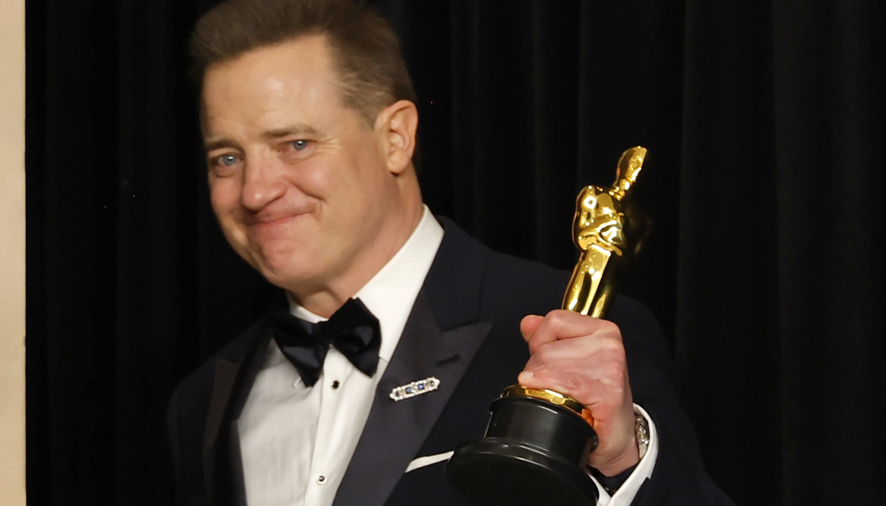

-1hrjqo4ygiezq.jpg&tbnid=o8_BMFphYgpblM&vet=12ahUKEwjHmv3_t97-AhWJppUCHcMqAgIQMygDegUIARCzAQ..i&imgrefurl=https%3A%2F%2Fwww.terra.com.br%2Fnos%2Fmichelle-yeoh-vence-o-oscar-2023-e-faz-discurso-antietarista%2C4668aefac2401f5e2676ecdf3b15dfdakdpspqon.html&docid=riy2xWRANKtJAM&w=774&h=435&q=Michelle%20Yeoh&ved=2ahUKEwjHmv3_t97-AhWJppUCHcMqAgIQMygDegUIARCzAQ)


%2Fhttps%3A%2F%2Fskoob.s3.amazonaws.com%2Flivros%2F3722%2FNADA_DE_NOVO_NO_FRONT_15670870113722SK1567087011B.jpg&tbnid=ptZN0Za3W5onKM&vet=12ahUKEwisjOGBut7-AhWorZUCHd4PBlIQMygPegUIARDkAQ..i&imgrefurl=https%3A%2F%2Fwww.skoob.com.br%2Fnada-de-novo-no-front-3722ed4714.html&docid=VR-6IXF2bdfynM&w=600&h=1004&q=Nada%20de%20Novo%20no%20Front&ved=2ahUKEwisjOGBut7-AhWorZUCHd4PBlIQMygPegUIARDkAQ)


%2Fi.s3.glbimg.com%2Fv1%2FAUTH_da025474c0c44edd99332dddb09cabe8%2Finternal_photos%2Fbs%2F2023%2Fn%2Fv%2FLzvJiGRRiWv2OdZMXmTg%2Faaaaqfxc0sqwkljggwqmcijym5ovxiojqbmwixveh3maonz-1zcvjmscedfctixdkoizedxxfzs6rs229c7b2auuy7r5wtheptphwvbphayqldk2mimsy6kfqim0mvt1jcfw46srd30znqcca02yxfglb63ipjw.jpeg&tbnid=SMvYTmW-n6hrkM&vet=12ahUKEwjAgL-iu97-AhVbt5UCHeLkBCAQMygEegUIARDLAQ..i&imgrefurl=https%3A%2F%2Foglobo.globo.com%2Frioshow%2Fcinema%2Fnoticia%2F2023%2F03%2Fcritica-nada-de-novo-no-front-um-impressionante-libelo-antibelicista.ghtml&docid=pXriSdsup4Q6mM&w=924&h=487&q=Nada%20de%20Novo%20no%20Front&ved=2ahUKEwjAgL-iu97-AhVbt5UCHeLkBCAQMygEegUIARDLAQ)
%3Astrip_icc()%2Fi.s3.glbimg.com%2Fv1%2FAUTH_08fbf48bc0524877943fe86e43087e7a%2Finternal_photos%2Fbs%2F2022%2Fp%2Fo%2Fnk8Ar7QuC2NgmSeXxaVg%2Fpantera-negra-wakanda-forever-para-sempre-sinopse-elenco-trailer-filme.jpg&tbnid=Kd3I7j9QcoSt5M&vet=12ahUKEwiQq96zu97-AhWltZUCHRfVCNQQMygCegUIARC_AQ..i&imgrefurl=https%3A%2F%2Fwww.techtudo.com.br%2Fnoticias%2F2022%2F11%2Fpantera-negra-wakanda-para-sempre-veja-sinopse-trailer-e-elenco-streaming.ghtml&docid=p-5AiwsnDU3gDM&w=600&h=338&q=Assembled%20Pantera%20Negra%3A%20Wakanda%20Para%20Sempre&ved=2ahUKEwiQq96zu97-AhWltZUCHRfVCNQQMygCegUIARC_AQ)


 clique aqui para acessar a pagina da imagem
clique aqui para acessar a pagina da imagem
Todo ano, a Academia de Artes e Ciências Cinematográficas premia os melhores filmes e artistas, como documentários, curtas, atores, atrizes, diretores, maquiadores e figurinistas com a estatueta do Oscar, uma das mais cobiçadas em Hollywood.O Oscar, conhecido em inglês como The Oscars ou The Academy Awards, é uma cerimônia que premia as principais produções de cinema do mundo. Essa premiação foi idealizada em 1927 e celebrada pela primeira vez em 1929, em Los Angeles. Atualmente é o principal evento do cinema mundial, sendo assistido por milhões de pessoas.
A cerimônia do Oscar 2023 foi realizada no dia 12 de março, em Los Angeles, no Dolby Theatre, que sedia a premiação desde o ano de 2002. Essa edição, diferentemente das dos últimos anos, ficou marcada por uma atenção menor aos protocolos contra a covid-19, muito em parte pela redução do alcance da doença nos Estados Unidos.As últimas edições do Oscar foram marcadas por um baixo número de espectadores, o que gerou uma grande preocupação para a Academia. A cerimônia de 2022 havia registrado um total de 13,73 milhões de espectadores nos Estados Unidos.|3| Esse número representou um significativo aumento em relação aos 9,85 milhões que assistiram a cerimônia em 2021, mas ainda foi considerado um número insuficiente porque o evento já chegou a ser acompanhado por 43,7 milhões de pessoas.
ganhaadores do oscar esse ano?
| categorias | vencedores |
|---|---|
| melhor filme | tudo em todo lugar ao mesmo tempo |
| melhor ator | Brendan Fraser(a baleia)  |
| melhor atriz | Michelle Yeoh(tudo em todo lugar ao mesmo tempo) |
| melhor ator coadjuvante | Ke Huy Quan |
| melhor atriz coadjuvante | Jamie Lee Curtis |
| melhor canção original | Naatu Naatu |
| melhor trilha sonora original | Nada De Novo No Front |
| mlhor filme de animação | Pinóquio |
| melhor filme internacional | Nada De Novo No Front |
| melhor direção | Daniel Kwan |
| melhor direção 2 | Daniel Scheinert |
| melhor roteiro adaptado | Entre Mulheres |
| melhor roteiro original | Tudo Em Todo Lugar Ao Mesmo tempo |
| melhores efeitos visuais | Avatar:O Caminho da Àgua |
| melhor fotografia | Nada De Novo No Front |
| melhor figurino | Pantera Negra:Wakanda Para Sempre |
| melhor direção de arte | Nada De Novo No Front |
| melhor montagem | Tudo Em Todo Lugar Ao Mesmo Tempo |
| melho curta-metragem em live action | An Irish GoodBye |
| melhor maquiagem e penteados | A Baleia |
| melhor curta-metragem de animação | O Menino,A Toupeira,A Raposa e o Cavalo |
| melhor ducumentário de longa-metragem | Navalny |
| melhor documentário de curta-metragem | Como Cuidar De Um Bebê Elefante |
| melhor som | Top Gun:Maverick |